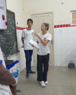
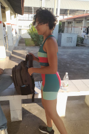
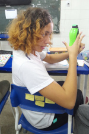

Gabriella (Gabi / Curupira fdp)
Não sei nem como começo, de longe a pessoa que mais sabe da minha vida, anos e anos de história. Desde a época da IAM já tínhamos combinado de estudar no Milton e assim foi, passamos alguns anos meio afastados, mas isso não impediu nossa amizade de seguir inabalada. Ela é uma pessoa incrível e sabe disso, só tenta disfarçar pra não ser esnobe, claro que também é totalmente louca, distraída e um pouco surda, mas é o jeito Gabriella de ser, certamente ela começaria a me humilhar com um "Ô MÔ...", gíria que eu não faço a menor ideia de onde ela tirou mas ok. Obrigado por me apoiar esse tempo todo.
Álbum de Gabi


